Dye
Lat: 59.40908
Long: 13.454926
Allmänt
I skogen utanför Råtorp i Karlstad finns en 50-60 meter bred sten/klippa med 30-40 problem och traverser. Kort intensiv klättring på 2-3m hög, överhängande klippa med mer eller mindre känsliga utsteg.
Vägbeskrivning
Enklaste sättet att ta sig dit är med cykel, för då kan man ta sig hela vägen fram till klippan och slipper bryta mot ev. fordonsförbudsregler.
Kör från Karlstad ut mot Skåre och Råtorp (skyltning finns från E18). Åk på "Stora vägen" (mellan älven och järnvägen) mot Skåre tills du ser en preem-mack på vänster sida. Ta in på vägen till vänster innan macken. Fortsätt rakt fram till nästa korsning som är Råtorps "huvudgata" (skratta inte, det är ingen storstad du befinner dig i). I korsningen till höger bör du se en brunaktig tegelbyggnad. Denna har tidigare utgjort en matbutik, men där finns idag annan verksamhet.
Fortsätt rakt fram i korsningen och kör över järnvägen. Kör några hundra meter förbi en ladugårdsbyggnad på höger sida och ett bostadshus i tegel på vänster sida. En gammal skylt på höger sida varnar om att fordon inte har här att göra. Du kan respektera detta och parkera bredvid informationsskylten om I2's strövområde till vänster eller fortsätta rakt fram tills du ser en bom korsa en väg till höger. Parkera i så fall här och knalla förbi bommen.
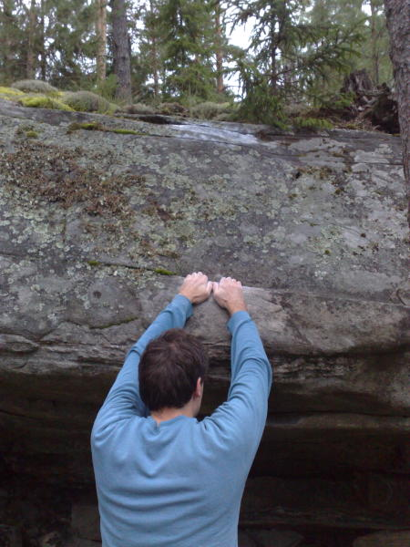
Fortsätt ungefär 500 meter. När vägen gör en lätt stigning åt höger så är det 100 meter till klippan som hittas på vänster sida.
Beskrivning
En förare över Dye boulder skapades av Martin Kristiansson 2004.
Texten på denna sida är till största del hämtat från detta alster.
Till skillnad mot andra boulderställen i Karlstad som Färjestad och Hästspåret är Dyes karaktär av ett annat slag. Om utveckling av färdigheter som teknik, tassighet, balans och finlir erbjuds vid Färjestad och Hästspåret, så erbjuder dye mer kroppsstyrka, kontaktstyrka, pump och "jävlar anamma".
Dye är kompakt, då alla problem är gjorde på en och samma "sten". Stenens höjd är 2-3 meter och dess längd uppskattas till ungefär 60 meter +- någon meter i ändarna. De flesta problemen är sittstarter med mer eller mindre grad av överhängande lutning (vanligtvis mer än midre), går ut över en "läpp" och avslutas med något "svaiga" utsteg. Detta om man klättrar uppåt. Stenen erbjuder också fina traverser med en hel del heelhookarbete och pump i underarmarna.
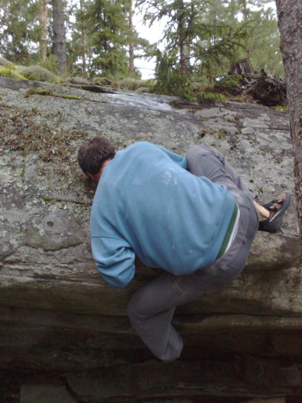
40 minuter med målinriktade övningar (en blandning av problem och traverser) kan göra dig ordentligt mör.
Landningarna är generellt bra. Platt berg eller stubbe är dina största problem. Då flera avslut är krångliga mantlingar och/eller heelhooks över kant, så kan en spotter vara behövlig så du inte trillar med huvudet först.
Graderna bör betraktas som något ofullständiga då de genomgått en konvertering från V-grader till fontangrader samt att vissa problem ej repeterats i tillräckligt stor omfattning för att anses vara helt tillförlitliga.
Traverserna beskrivs med franska ledgrader. Problemen "uppåt" beskrivs med fontangrader.
För att enklare kunna hitta vid klippan har man medvetet skrivit in mycket text vid varje problem.
Om DU anser att detta är för mycket beta, så flytta denna information till varje problem. Dvs, gör så att man måste klicka på problemet för att ta till sig denna information.
Sektioner
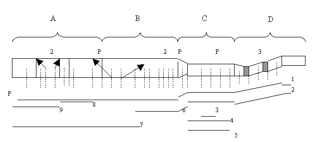
För enkelhetens skull är området uppdelat i 4 områden (A, B, C, D) samt traverser
Horisontella fyllda linjer: Traverser
Vertikala streckade linjer: Problem
P: Projekt
2, 3: Varianter (det finns givetvis olika sätt att ta sig upp på de flesta problemen, men markerade ”variantproblem” i översikten är av det slaget att problemet väsentligt ändrar karaktär och på så vis ges möjlighet att träna varierande färdigheter)
Pilar: Visar riktning i den bemärkelsen att problemet startar rakt upp och sedan tar av i sidled åt det ena eller andra hållet och därefter avslutar rakt upp i ett annat problem.
Antal problem: 28 stycken Antal traverser: 9 stycken
Traverser
- 1
- Den långa färden (projekt)
- 8a-8b?
- ett projekt där hela stenens längd erövras. Det rör sig om mellan 70 och 80 rörelser(!). Det är svårt för en dödlig att uppskatta svårighetsgraden, men gissningsvis tickar den in i 8a-8b registret. Något för den svenska bouldereliten att bita i.
- 2
- Syrebrist
- 7a+
- Traversen börjar längst till höger på stenen (område D) och avslutas upp i ett dieder som markerar avslutningen på område C och börjar på område D. Början är trevlig och lite tassig då man traverserar på vertikal vägg. När område D tar slut viker traversen av runt ett hörn och här böjar den svettiga passagen. Krimp, slipiga och goda jugs blandas i en salig röra allteftersom pumpen börjar spruta ur öronen. Den sistab iten innehåller en del heelhooks och du hänger under stenen. Avslutningen sker i diedret och man får tänka till en hel del för att lösa den. Väl uppe kippar man efter andan.
- 3
- Uppvärmningen
- 5a
- Här erbjuds goda grepp där man kan traversera fram och tillbaka för att få lite genomströmning och värme i kroppen. Går i mitten på område C. Startar på goda grepp från vänster sett efter ett sloopgrepp som i Syrebrist tas med båda händerna. Avslutas sedan, även här på goda grepp, innan (fortfarande med syrebrist för ögonen) börjar använda heelhooks och hänga under stenen
- 4
- Fortfarande lite syre kvar
- 7a
- Här struntar du i den trevlgia inledningen på Syrebrist och börjar i hörnet för att direkt känna på överhängande siledsförflyttningar (Kan alltså ses som en kortare variant av Syrebrist). Detta innebär att du ahr lite luft kvar i kroppen när du gjort hela traversen.
- 5
- Down Under
- 7b+
- Har samma längd som "Fortfarande lite syre kvar" men är betydligt hårdare. skälet är att treversen går under "Fortfarande lite syre kvar" där greppen är avsevärt sämre. Kräver nyp i fingrarna och stabil kroppshållning, samt en heelhook påminimalt fotsteg. Avslutas på samma sätt som "Syrebrist".
- 6
- Jag går på Promenaden
- 7b+
- Inspirerar till att efteråt ta det lite lugnt och härav namnet. Tankarna går till Ulf Lundells gamla slagdänga där han lite halvlulligt promenerar fram med pilsner i hand och spanar på vackra fruntimmer. Traversen börjar där Syrebrist avlsutas och slutar i mitten på Område B i ett litet dieder med ett bra grepp för båda händerna mitt i diedret. Det handlar om en riktigt bitig start med nödvändig heelhook. Därefter kan man pusta ut en smula för att ta itu med ett par ännu bitigare rörelser. Sedan pustar man lite till och därefter följer sidledsförflyttningar med heelhooks varierat hängande i luften på varierande grepp. Från det goda greppet i diedret, sätt upp fötterna och skicka till kanten
- 7
- Den onde, den gode, den fule
- 7c
- Dyes hårdaste <u>gjorda</u> travers. Namnet känner nog de flesta clintanfan igen och har sin historia i att traversen ändrar karaktär i termer av tre faser. Den första fasen startar på crimper under avslutningen på "Jag går på promenaden". Här görs några ashårda crimpförflyttningar med en catchavslutning upp till fas två, den goda delen. Här erbjuds fin travers på snälla grepp. Avslutningen är emelertid ful. Både fingerstryka och kroppstyrka krävs då vissa pertier är rätt så crimpiga samtidigt som du tvungas släppa heelhooks och pendla öer kroppen fritt vid ett tillfälle. De sista rörelserna är härav stenhårda. Till säkerhet når man genom att gå upp där "Catch and hold" går upp. Traversen har endast gjorts av Peter Haster i högform samt efter många års slit Martin Kristiansson
- 8
- Sommarflanören
- 6b
- En trevlig travers utan allt för stora problem. Den börjar dock lite bitigt där du hängar av med opencrimp på ett sluttande litet grepp längst under stenen samtidigt som det är avgörande att kila in en heelhook ordentligt. Från dennaposition skickar du till ett hyftsat grepp och sedan går du upp och etablerar dig inför mer utpräglad sidledsförflyttning (den gode). Traversen avslutas i det "skravell-liknande" område mitt på område A
- 9
- Den fule som blev snygg
- 6c
- Traversen har fått sin egen status som en del av "Den onde, den gode och den fule". Anledningen är att den i sig själv är rätt snygg om den inte utgör en del av travers 7, så du är förhållandevis sliten när denna passage börjar. Genom att strunta i "Den onde och den gode-fasen" kan man utvilad och med målet närmare i sikte ta sig fram genom mycket variantionsrika och fina förflyttningar.
Övrigt: Traverserna har i föraren begränsats till antal. Du kan med god tillförsikt variera dig inom traverssystemet och på så vis sätta ihop egna traverser som extra krydda på tillvaron.
Område A
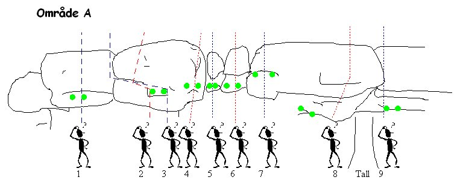
Gröna punkter indikerar startgrepp
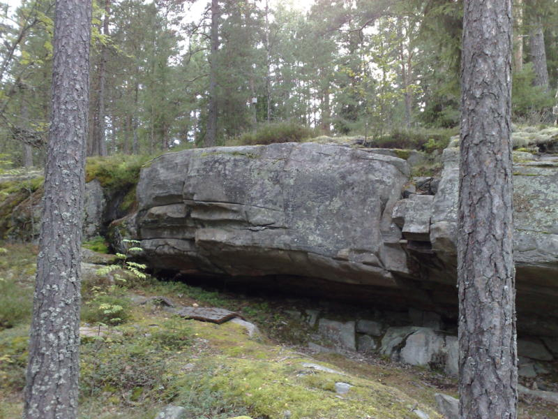
Område A längst till vänster på klippan
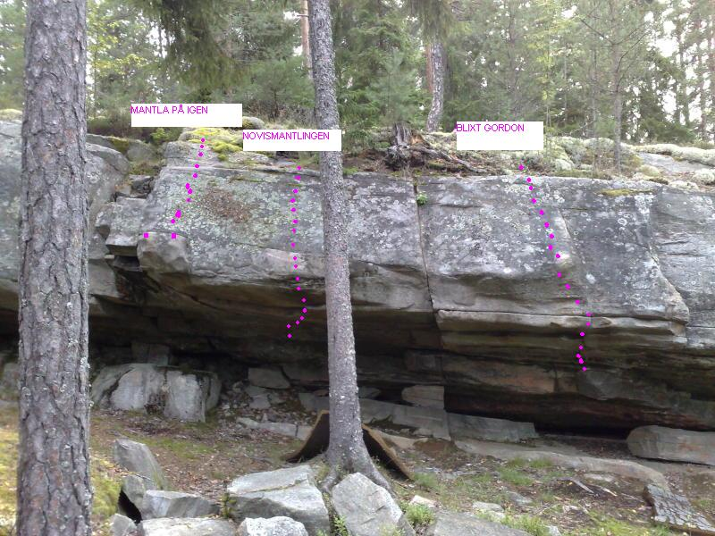
Halva område A och halva område B
- 1
- Fingerpill
- 6a+
- Starta sittande på slopig yta för väsnterhanden och en viss tendens tillf ormation för högerhanden. Ettlitet fotsteg för vänsterfoten hjälper dig att hålla tryck när du pressar dig upp till ett krimpigt sidgrepp för högern som man kan behöva pilla lite på för att få til det. Försök lås av, flytta fötterna och skicka mot toppen. Kort och hård, men inte särskilt teknisk.
- 2
- Kramp i vaden
- 6b+
- Starta på en halvgod hylla, pressa med högerfoten på ett bra fotsteg, skicka upp till en negativ spricka, etablera båda händerna i denna, sätt upp en heelhook på hyllan och pressa dig upp till ett litet grepp med högerhanden. Härifrån måste du etablera dig över läppen för att gå ut problemet. Några fler rörelser än "Fingerpill", mer teknisk och framförallt krampvarning i vaden i och med heelhooken
- 3
- Catch and Hold
- 5c
- Börjar på samma sätt som kramp i vaden, men sedan följer du sprickan, pendlar över med kroppen och sedan upp i en layback på den lilla aréten. Ett av Dyes första och finaste problem skapat av en av områdets pionjärer Jon Granath.
- 4
- Klämmkäck och Blodig hand
- 5b
- Här finns 2 varianter på en och samma linje. Du börjar med båda händerna på ett slopigt grepp. Antingen går du upp med högerhanden och pinchar en trekantspinch, eller så jammar du in handen i ett trekantsjam. Sätt ut högerbenet i en hälkrok på god hylla, pressa dig upp, mentla med vänsterhanden och gå sedan ut problemet. Ett par trevliga varianter där du kan träna både pinch och jam.
- 5
- Sprättlätt
- 4+
- Börja med båda händerna på en god jug. Placera vänsterfoten på ett bra steg under taket. Flagga med högerfoten, vrid in och pressa dig upp med vänsterhanden till kanongrepp. Jobba dig upp behagligt och lätt. Kan vara bra för att öva invridningar och låsta sträckningar.
- 6
- Lätt som en plätt
- 4+
- Börja med båda händerna på en stor negativ hylla. Placera fötterna under taket. Arbeta dig på god sidogrepp och sedan ut. Här finns en campusvariant som kan vara bra att köra för att få kontaktstyrka. Du börjar hängande i stratgreppen. Går upp med båda händerna på rejäla sloopisar. Skicka sedan till kanten.
- 7
- Mantla på igen
- 6c
- Preliminär hög grad då mantlingsvirtuosen Jim Gruntman fick kämpa en del för att ta sig upp. För övrigt bara Peter Haster och möjligtvis urban Hörnström som lyckats sätta problemet. Du börjar på två bra, men sloopiga grepp, sätter ut foten på ett pyttelitet steg till höger, presser upp dig i mantlingsläge och fäpplar en hel del för att få hygglig position och balans. Ta dig sedan försiktigt och stönande upp till kanten
- 8
- Novismantlingen
- 6a
- Börja sittande längst in under taket med båda fötterna på en negativt sluttande list. Kila fast en heelhook för högerfoten. Skicka ordntligt till ett hyfsat grepp med högerhanden. Köra över på ett bättre grepp med vänsterhadnen. Här etablerar du dig med båda händerna, vrider in kroppen och pressar dig upp till en bra hylla. Från denna hylla skall du mantla. Sätt upp högerfoten i hyllan, mantla och gå upp. Vissa gör mantlingen enkelt, andra inte. Det går att pressa sig upp till ett litet grepp om man är usel på att mantla
- 9
- Dye, motherfycker, dye
- 7B+
- Projektet har samma start som "Fuck Newton", men avslutas i ett litet dieder rakt upp, istället för att gå upp i novismantlignen som utgör avslutning på Fuck Newton. Alla grepp till vänster elimineras. Hög heelhook eller layback.
Område B
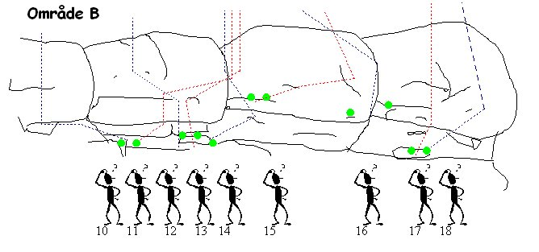
Gröna punkter indikerar startgrepp
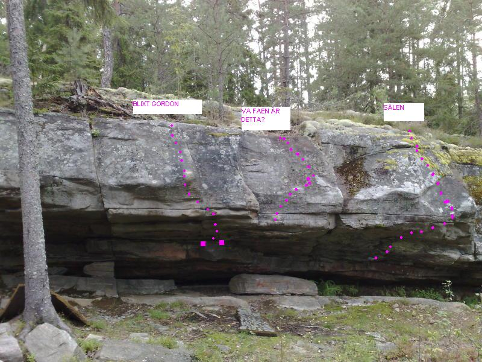
Område B
- 10
- Fuck Newton
- 6b+
- Innan en annan "fotlösning" hittades på det här problemet betraktades det som ett av Dyes hårdaste. Du börjar med båda händerna placerade i en spricka längst in under taket och heelhookar med vänster fot på en hylla till vänster. Därefter krimpar du dig utåt på ett litet grepp, samt en sidospricka somlöper ut från taket. Skicka med högerhanden till sprickan på läppen. Organisera om fötterna och skicka sedan till ett bra grepp utåt vänster (samma grepp som novismantlingen) och avsluta sedan med Novismantlingen. Ett problems om både kräver krimp och kroppsstyrka
- 11
- Banndörr
- 6c
- är snäppet svårare än Fuck Newton. Inte på grund av att problemet är bitigare utan för att det är mer känsligt. Du börjar på samma sätt som Fuck Newton, men istället för att ta det lilla krimpergreppet under taket, går du ut med vänsterhanden på ett sloopgrepp. Svårigheten ligger i att hänga kvar när du flyttar högerhanden till ytterligare en slooper. Lyckas du här sträcker du dig upp till sprickan på läppen, möblerar om fötterna, traverserar en bit åt höger. Hör behöver du får upp en heelhook på hyllan till höger om diedret. Från denna position pressar du dig upp till ett bra grepp inne i diedret. Skicka sedan till toppen.
- 12
- Blixt Gordon
- 7b
- Ett problem som äntligen satts ihop till en helhet. Du börjar med båda händerna på två "horn" längst in under taket. Fortsätt rakt ut genom taket på bra grepp. gå ut till två små sloopers på läppen till vänster. Etablera dig och gå upp till sidogrepp som löper snett upppåt vänster och fortsätt sedan till toppen. Riktigt fint problem som kräver lite kroppsstyrka och bra positioner. Seriös onsight
- 13
- Regnet öser
- 5c
- Ett trevligt problem som har samma början som "Blixt Gordon" och avslutas på samma sätt som "Banndörr".
- 14
- ...och öser
- 6a
- Samma utgångsläge, mend et är viktgit att du placerar båda händer på höger sida av startgrepp för "Regnet öser". Du skall nämligen tu till höger i en lång sträckning till ett hyfsat krimp under taket. Härifrån skickad du huvudlöst till en slooper och då är du i princip hemma. Avslutningen är densamma som Regnet öser.
- 15
- Va fa'n är detta?
- 6a
- Vissa säger att detta problem är lätt. Andra menar att det är tillräckligt lurigt för att erhålla graden 6b. Du börjar med båda händerna på en bra hylla (hyllan bredvid diedret), traversera åt höger två grepp. Från sidogreppet som löper snett uppåt vänster ska du ut/upp klockan 11. Lämpligt namn
- 16
- Der dieder
- 6b
- Ett mer bitigt än svårt problem. Du börjar på två små kriper och skickar med vänsterhanden till det vänsterlutande greppet på "Va fa'n är detta". Sedan flyttar du fötterna och går in i en layback med hjälp av ena sidan av diedret. Därefter ser du till att stå bra innan du i lugn och ro kan klättra upp.
- 17
- Der dieder SS
- 7A
- Sittstart i kanten, sedan skick ut till crimparna och ut som Der Dieder.
- 17
- Ut med högerfoten och mantla på
- 6c+
- Här finns två varianter. Ena sätter du ut högerföoten på ett litet fotsteg för att med mer behaglig känsla etablera dig på svat. Eller så sätter du foten på läppen och mantlar upp från samam position. Svårighetsgraden kan ändå betraktas som densamma. Du börjar på en bra hylla längst in under taket. Tar ett grepp mitt under taket. Därefter skickar du ut till ett pyttegrepp med vänsterhanden för att sedan flytta upp högerhanden i en liten spricka ovanför det första greppet. Fortsätt med att flytta vänsterhanden till samma spricka. Sätt foten på greppet mitt under taket och skicka till en bra hylla ovanför läppen. Avsluta med den ena eller andra varianten som beskrevs ovan.
- 18
- Sälen
- 7a
- Problemet har gäckat dyebesökare under flera år. Lösningsmannen (en barbar), sa att han kände sig som en säl när han gjorde den och uppskattade graden som V6 på vintern och V7 på sommaren i och med krav på god friktion. Att man känner sig som en säl har kunnat bekräftas av de flesta som repeterat problemet. Börja genom att matcha på välkritat grepp längst in under taket. Fortsätt snett ut höger genom taket på bra grepp. Etablera dig på den lilla och stora slopern på läppen. Skicka därefter till slooperaktig formation som löper snett uppåt höger på svat. Här kan man tro sig vara hemma, men allt blir väldigt konstigt och "sälen" gör entré. Du ska ut rakt upp. Ser enklare ut än vad den är.
-
- Säljakt
- 7a+
- Börja som Storebror men gå ut i Sälen.
Område C
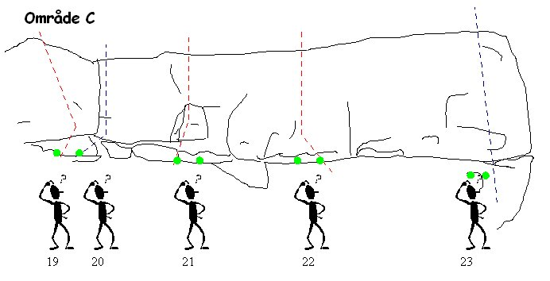
Gröna punkter indikerar startgrepp
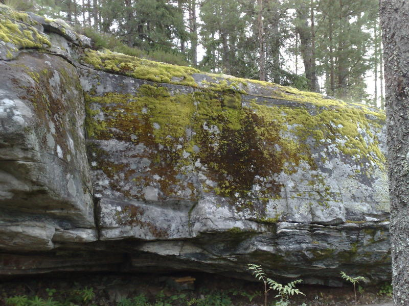
Område C... behöver borstas upp
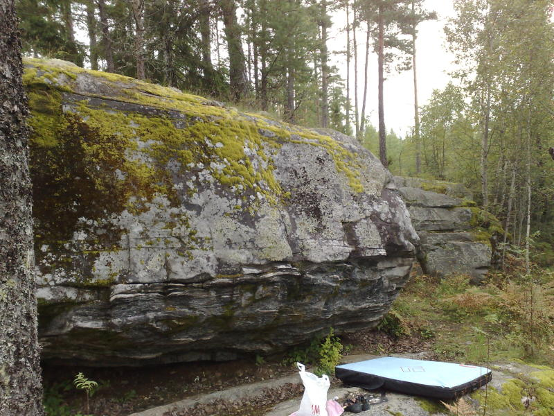
Andra delen av område C. stålborste någon?
- 19
- Storebror
- 7a+
- Börjar sittande på bra grepp under taket. går ut rakt över areten via bullig skitkrimp på sidoväggen och slopiga formationer i slutet.
- 20
- Stonefreak
- 6a
- Börjar på samma ställe som Storebror. Sätt upp händerna på en tvärgående list en liten bit upp i diedret. Försök etablera dig så att du kan "sidopressa" på formationen till vänster som vetter mot dig i den position du står. Härifrån pressar du med vänsterhanden, sätter upp högerfoten på den formation där du har vänsterhanden, reser dig och går upp. Lite avig och lurig.
- 21
- Svängdörren
- 6b
- En ganska hård boulder som börjar sittande under taket på bra grepp. Härifrån etablerar du dig för att skicka till en lista på samma yta du använder med vänsterhanden på "Stonefreak". Därefter går du till en annan list på högersidan av denna bulle för att skicka vidare till ytterligare en list med högerhanden. Placera väsnterhanden på samma list. Trippa med fötterna så att du antingen skickar upp till en vertikal list utåt höger, eller pusha med båda händerna där dom är för att balansera över in mot svat. Båda lösningarna går
- 22
- Layback right
- 5
- En enkel sak som kräver i princip en rörelse. Du börjar med händerna på en bra hylla, sätter upp vänsterfoten lite längre bort på samma hylla. Siktar mot en laybacklist på svat, skickar, tar den och sedan är det bara att resa sig.
- 23
- Trött på slabb
- 6a
- En lurig sak som börjar sittande med båda händerna på krimpig formation. Skicka upp med vänster till den limpformade formationen. Fortsätt med högern till samma ställe och etablera dig i layback. Härifrån skickar du till en slooper med vänsterhanden, väger över lite åt höger för att få dig högerhanden. Tassa sedan upp.
Område D
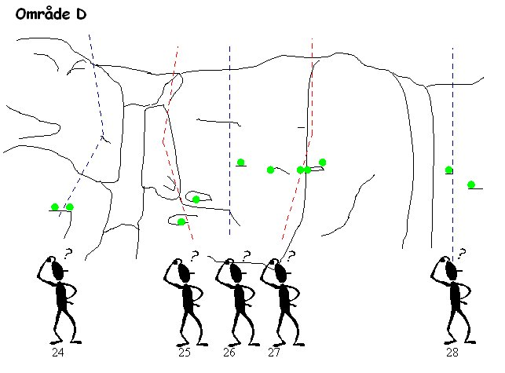
Gröna punkter indikerar startgrepp
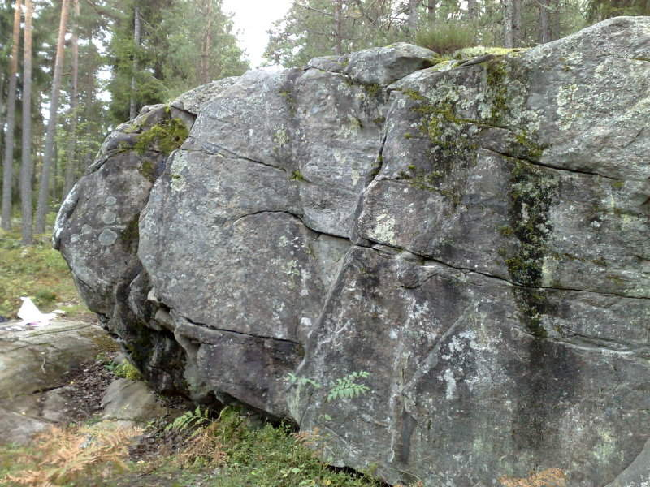
De vertikala problemen på område D
- 24
- Lillebror
- 6b
- Ett av de yngre problemen, som är mer hårt än tekniskt. Du börjar på samma grepp som "Trött på slabb", sätter upp en häl på hylla till höger. Flytter upp händerna till sprickan. Härifrån sträcker du dig till ett litet sloopigt krimpgrepp på facet till höger och sedan skickar du deadpoint till en liten slooper ovanför läppen, sller så gör du det i det närmaste statiskt som Jim Gruntman gör. Placera den andra handen bredvid den första, etablera dig och gå sedan ut.
- 25
- Prova en Gaston
- 5a
- Ett trevligt problem på goda grepp. Börja sittande med händerna på två bra grepp. Skicka vänsterhanden till ytterligare ett bra grepp. Vrid in i gaston och upp med högerhanden till en bra pinch. Skicka vidare med högern, fortfarande till ett bra grepp. Härifrån är det lätt att gå ut problemet. Fin som uppvärmning.
- 26
- Ole
- 5
- Ett av stenens tre vertikala problem. Du börjar med att etablera dig med hjälp av invridning och ett grepp för högerhanden . Sträck dig försiktigt till en liten spricklist med vänstern. Tassa upp och skicka till toppen. Trevlig.
- 27
- Dole
- 5a/5c
- Nästa vertikala problem som kan göras på åtminstone tre roliga sätt. Lättast är att etablera sig på ett grepp med båda händerna mitt på aréten och placera fötterna på var sida av aréten. Flytta upp vänstern till obefintlig list och skicka med vänstern till toppen. de två övriga varianterna utnyttjar mer arétens sloopiga formation. Du placerar dig i samma utgångsläge. Sätter upp vänsterhanden och viker över vikten mot vänster, eller så gör du tvärtom för att därefter avancera till toppen. Skojigt.
- 28
- Doff
- 4+
- Sista vertikala problemet som börjar på lite kassa grepp upp på ett betydlgit bättre grepp och sedan ut. Helt okej.
kategori:överhäng
kategori:sva
kategori:bouldering
kategori:Värmland
kategori:saknar skrivarformatering
Copyright (C) Permission is granted to copy, distribute and/or modify this document under the terms of the GNU Free Documentation License, Version 1.3